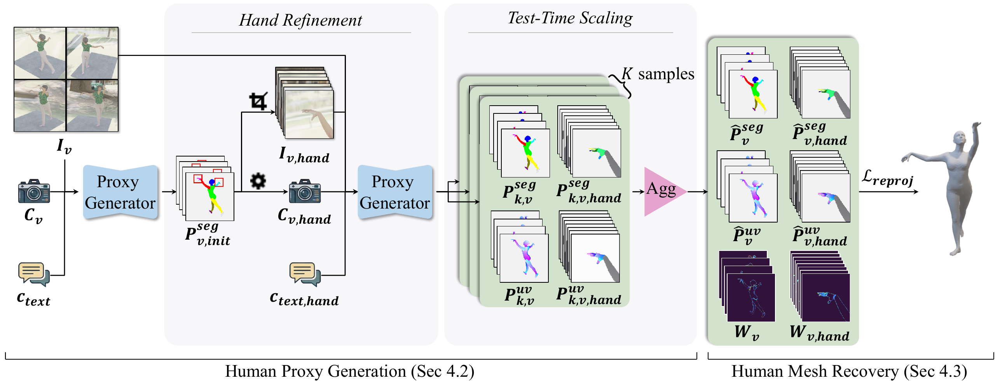
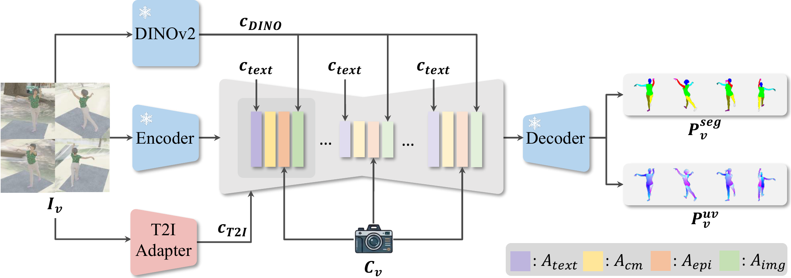

Method overview. The proxy generator first produces initial body proxies; the segmentation component $\mathbf{P}_{v,\mathrm{init}}^{\mathrm{seg}}$ is then used to crop and enlarge hand regions for a second pass (hand refinement). Test-time scaling then draws $K$ stochastic samples for both body and hand proxies, aggregates them, and derives per-pixel uncertainty weight maps $\mathbf{W}_v$. Finally, SMPL-X parameters are recovered by minimizing an uncertainty-weighted reprojection objective $\mathcal{L}_{\mathrm{reproj}}$.

Diffusion-based proxy generator architecture. Our model is built on Stable Diffusion~2.1 with a frozen UNet backbone, equipped with three conditioning signals ($\mathbf{c}_{\text{text}}$, $\mathbf{c}_{\text{T2I}}$, $\mathbf{c}_{\text{DINO}}$) and four trainable attention modules ($\mathcal{A}_{\mathrm{text}}$, $\mathcal{A}_{\mathrm{img}}$, $\mathcal{A}_{\mathrm{cm}}$, $\mathcal{A}_{\mathrm{epi}}$) for multi-view consistent proxy generation.
Our synthetic dataset contains 105,487 clothed SMPL-X subjects rendered into 843,896 images across eight randomized views, featuring HDR lighting, realistic occlusions, and physics-based clothing. The dataset provides pixel-perfect SMPL-X proxy annotations, eliminating annotation noise inherent in real-world datasets and enabling strong generalization to real-world scenarios.
| 3dhp | rich | behave | ||||||||||
|---|---|---|---|---|---|---|---|---|---|---|---|---|
| Method | PA-MPJPE | MPJPE | PA-MPVPE | MPVPE | PA-MPJPE | MPJPE | PA-MPVPE | MPVPE | PA-MPJPE | MPJPE | PA-MPVPE | MPVPE |
| SMPLest-X | 32.5* | 48.1* | 46.6* | 62.3* | 31.8* | 67.6* | 40.3* | 81.1* | 30.0* | 48.6* | 43.5* | 63.6* |
| Human3R | 53.1 | 84.3 | 67.7 | 104.1 | 52.1 | 101.1 | 64.4 | 116.9 | 38.3 | 85.0 | 53.8 | 102.3 |
| sam3dbody | 40.3 | 57.6 | 54.0 | 74.0 | 30.6 | 48.6 | 37.9 | 57.7 | 28.1 | 41.6 | 42.1 | 54.7 |
| U-HMR | 67.3* | 142.9* | 78.5* | 164.2* | 55.5 | 134.9 | 67.8 | 159.3 | 46.1 | 118.7 | 51.9 | 135.0 |
| MUC | 40.2 | - | 51.3 | - | 35.7* | - | 42.7* | - | 28.7 | - | 41.8 | - |
| HeatFormer | 29.2* | 49.9* | 34.7* | 53.3* | 40.1 | 80.1 | 52.9 | 93.8 | 33.4 | 70.2 | 47.7 | 80.5 |
| EasyMoCap | 34.3 | 43.7 | 43.2 | 51.5 | 31.2 | 49.8 | 44.2 | 60.3 | 21.8 | 29.6 | 35.1 | 40.4 |
| Ours | 32.8 | 41.1 | 44.7 | 50.9 | 24.2 | 33.7 | 28.9 | 35.1 | 22.8 | 32.7 | 31.3 | 39.9 |
| moyo | 4ddress | 4ddress-partial | ||||||||||
|---|---|---|---|---|---|---|---|---|---|---|---|---|
| Method | PA-MPJPE | MPJPE | PA-MPVPE | MPVPE | PA-MPJPE | MPJPE | PA-MPVPE | MPVPE | PA-MPJPE | MPJPE | PA-MPVPE | MPVPE |
| SMPLest-X | 45.6* | 63.3* | 62.1* | 81.4* | 34.8 | 52.1 | 52.4 | 70.2 | 72.2 | 101.7 | 111.3 | 140.6 |
| Human3R | 65.0 | 87.8 | 81.6 | 107.6 | 30.0 | 52.4 | 42.4 | 66.7 | 72.3 | 117.6 | 103.5 | 153.9 |
| sam3dbody | 34.1 | 47.8 | 46.8 | 61.8 | 28.1 | 41.8 | 42.7 | 56.1 | 42.4 | 56.8 | 65.0 | 79.7 |
| U-HMR | 88.3 | 177.7 | 104.9 | 209.7 | 42.1 | 80.3 | 52.6 | 98.8 | 65.2 | 136.1 | 87.2 | 175.2 |
| MUC | 62.8 | - | 76.0 | - | 33.2 | - | 49.2 | - | 60.1 | - | 92.9 | - |
| HeatFormer | 67.3 | 126.9 | 79.6 | 123.6 | 43.4 | 73.3 | 61.6 | 90.2 | 143.8 | 291.6 | 175.2 | 327.0 |
| EasyMoCap | 31.4 | 41.2 | 44.8 | 51.6 | 19.9 | 24.9 | 31.8 | 35.3 | 48.2 | 94.8 | 69.8 | 119.4 |
| Ours | 28.3 | 32.4 | 35.2 | 38.8 | 16.6 | 20.5 | 23.3 | 25.6 | 27.6 | 31.6 | 41.3 | 43.1 |
Benefiting from the strong visual priors of diffusion models and training exclusively on synthetic data, our method achieves substantial improvements over prior approaches. In many cases, our results exhibit tighter image-mesh alignment and stronger robustness under challenging real-world conditions.
@article{wang2026diffproxy,
title={DiffProxy: Multi-View Human Mesh Recovery via Diffusion-Generated Dense Proxies},
author={Wang, Renke and Zhang, Zhenyu and Tai, Ying and Li, Jun and Yang, Jian},
journal={arXiv preprint arXiv:2601.02267},
year={2026}
}